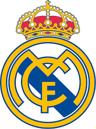

El Real Madrid Club de Fútbol, más conocido simplemente como Real Madrid, es una entidad polideportiva con sede en Madrid, España. Fue oficialmente registrada como club de fútbol por sus socios el 6 de marzo de 1902 con el objeto de la práctica y desarrollo de este deporte, si bien sus orígenes datan del año 1900, y su denominación de (Sociedad) Madrid Foot-ball Club de octubre de 1901, siendo el quinto club fundado en la capital. Tuvo a Julián Palacios y los hermanos Juan Padrós y Carlos Padrós como principales valedores de su creación. El 29 de junio de 1920, la entidad adquirió su designación actual mediante el otorgamiento del título honorífico de "Real" por parte de Su Majestad el Rey Alfonso XIII de España, quien también conferiría la distinción visual correspondiente incorporando la corona real en su emblema. Identificado por su color blanco (del que recibe el apelativo de «blancos» o «merengues»), es uno de los cuatro clubes profesionales de fútbol del país cuya entidad jurídica no es la de sociedad anónima deportiva (S. A. D.), ya que su propiedad recae en sus más de 90 000 socios.Otra salvedad comparte con el Athletic Club y el Fútbol Club Barcelona al participar sin interrupción en la máxima categoría de la Liga Nacional de Fútbol Profesional, la Primera División de España, desde su establecimiento en 1929. En ella posee los honores de haber sido el primer líder histórico de la competición, el de club con más títulos, y el de la máxima puntuación en una sola edición.
Abocado desde sus inicios al desarrollo del fútbol pronto adquirió un carácter multideportivo y desarrolló varias otras disciplinas que fueron desapareciendo con el devenir de los años,1617 a excepción de la sección de baloncesto, denominada Real Madrid Baloncesto.Hubo varias especulaciones en la historia reciente de la entidad sobre la posibilidad de recuperar algunas de ellas como la sección de balonmano,o la sección de rugby que no llegaron a materializarse,al contrario que una sección femenina de fútbol, parcela que desde los años 2010 el club trabajaba por crear con una base desde el ciclo formativo hasta la máxima categoría. Finalmente en 2019, y tomando otra de las posibles vías para su creación, se produjo aprobándose en una reunión extraordinaria por parte de los socios compromisarios y conformar así el Real Madrid Club de Fútbol femenino
TITULOS
El Real Madrid C. F. acumula en sus ciento veintiún años de historia numerosos trofeos tanto nacionales como internacionales. Entre ellos destacan por importancia, catorce Copas de Europa, dos Copas de la UEFA, cinco Supercopas de Europa, dos Copas Latinas, dos Pequeñas Copas del Mundo, una Copa Iberoamericana, tres Copas Intercontinentales y cinco Copas Mundiales de Clubes en el plano internacional; y treinta y cinco Ligas, veinte Copas de España, doce Supercopa de España, una Copa de la Liga, una Copa Eva Duarte, cinco Trofeos Mancomunados, dieciocho Campeonatos Regionales y cuatro Copas Regionales en los campeonatos nacionales.
Real Madrid : 35 Ligas

Real Madrid : 14 Champions League

Real Madrid : 20 Copas del Rey

Considerado por la FIFA como el mejor club del siglo xx

El club es uno de los únicos tres que ha disputado siempre la Primera División —máxima competición de clubes en España— desde su fundación en la temporada 1928-29 sumando un total de noventa y tres apariciones. Ocupa el primer puesto en la clasificación entre los sesenta y tres participantes históricos además de ser el más laureado con treinta y cinco títulos. Su peor actuación se registró en la temporada 1947-48 cuando finalizó en undécimo puesto. En cuanto al panorama internacional, el club fue uno de los clubes que participaron en la primera edición de la Copa de Europa —actual Liga de Campeones (en. Champions League) y más prestigiosa competición de clubes en Europa—, habiéndola disputado desde entonces un total de cincuenta y cuatro temporadas con ausencia en quince ediciones; es, por tanto, el club con más presencias. En ellas sumó un total de catorce títulos que le sitúan como el mejor equipo de la competición entre sus 536 participantes históricos. En el resto de competiciones oficiales nacionales suma un total de ciento treinta y cuatro apariciones —destacando ciento diez presencias en la Copa del Rey, segunda competición por importancia en España, sobre ciento diecinueve posibles— para treinta y cinco ausencias en alguna de ellas;y treinta y cinco apariciones en el resto de competiciones oficiales internacionales para dos ausencias en temporada de competiciones UEFA. Entre ellas destacan nueve en la Copa UEFA / Liga Europa y cuatro en la extinta Recopa de Europa.